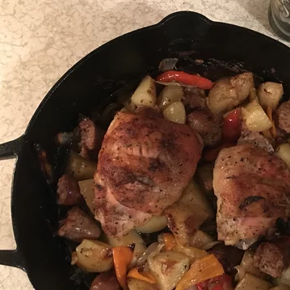

Chicken, Sausage, Peppers and Potatoes

A finished dish
Ingredients
- Chicken thighs, skin on and bone in
- Spicy Sausage (Chorizo, Italian etc.)
- Peppers (Bell peppers/Capsicum)
- Potatoes
- Other root vegetables (Carrot, Sweet Potato etc.)
Steps
- Preheat oven to 220C
- Lightly cook sausage until it can be cut cleanly
- Cut sausages and root vegetables into bite sized pieces
- Score Chicken thighs through skin down to the bone, 2-3 cuts per thigh should be plenty
- Place all items into a bowl/tray and add spices as desired
- Add oil and toss to coat evenly
- Spread evenly on a lined baking tray for ease of cleanup
- Roast at 220 for 60-70 minutes
- Allow to cool before distributing into containers for ease